中文
日本語
Home
Measure
Tutorial
Account
Logout

Search
User ID:
Time:
to
Status:
All
New
Confirm
Sorting
Time Ascending
Time Descending

Export
Export All
Export Selected
F
Retract Front
S
Retract Side
B
Retract Back
Side
Front
Back
Side
Show Tips
Show Target